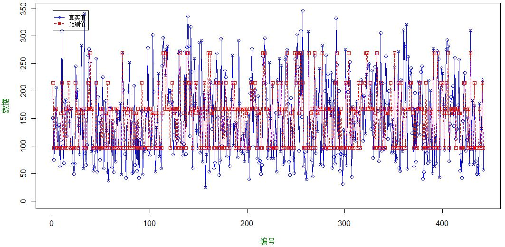

机器学习(Machine Learning, ML)是一门多领域交叉学科，涉及概率论、统计学、逼近论、凸分析、算法复杂度理论等多门学科。专门研究计算机怎样模拟或实现人类的学习行为，以获取新的知识或技能，重新组织已有的知识结构使之不断改善自身的性能。 它是人工智能的核心，是使计算机具有智能的根本途径，其应用遍及人工智能的各个领域，它主要使用归纳、综合而不是演绎。
机器学习简介
机器学习中的一些方法，如决策树，随机森林，SVM，神经网络等。由于对数据没有分布的假定等普通线性回归模型的一些约束，
预测效果也比较不错，交叉验证结果也能被接受。下面以R中lars包所包含的数据集diabetes为例说明机器学习中的决策树方法。
diabetes数据集内容介绍
diabetes数据集包含在R的lars包中，数据分为x，y，x2三个部分，因变量为y，数据是关于糖尿病的血液化验等指标。这个数据集最早被用在偏最小二乘回归的文章里，这里我们选用此数据集来进行分析。
diabetes的数据结构
数据结构
部分数据集
交叉验证
我们通过str(diabetes)来查看一下数据结构
'data.frame': 442 obs. of 3 variables:
$ x : AsIs [1:442, 1:10] 0.038075.... -0.00188.... 0.085298.... -0.08906.... 0.005383.... ...
..- attr(*, "dimnames")=List of 2
.. ..$ : NULL
.. ..$ : chr "age" "sex" "bmi" "map" ...
$ y : num 151 75 141 206 135 97 138 63 110 310 ...
$ x2: AsIs [1:442, 1:64] 0.038075.... -0.00188.... 0.085298.... -0.08906.... 0.005383.... ...
..- attr(*, ".Names")= chr "age" "age" "age" "age" ...
..- attr(*, "dimnames")=List of 2
.. ..$ : chr "1" "2" "3" "4" ...
.. ..$ : chr "age" "sex" "bmi" "map" ...
利用head(diabetes)来查看一下部分数据
x.age x.sex x.bmi x.map x.tc x.ldl x.hdl x.tch x.ltg x.glu y x2.age x2.sex x2.bmi x2.map x2.tc x2.ldl x2.hdl x2.tch x2.ltg x2.glu x2.age^2 x2.bmi^2 x2.map^2 x2.tc^2 x2.ldl^2 x2.hdl^2 x2.tch^2 x2.ltg^2 x2.glu^2 x2.age:sex x2.age:bmi x2.age:map x2.age:tc x2.age:ldl x2.age:hdl x2.age:tch x2.age:ltg x2.age:glu x2.sex:bmi x2.sex:map x2.sex:tc x2.sex:ldl x2.sex:hdl x2.sex:tch x2.sex:ltg x2.sex:glu x2.bmi:map x2.bmi:tc x2.bmi:ldl x2.bmi:hdl x2.bmi:tch x2.bmi:ltg x2.bmi:glu x2.map:tc x2.map:ldl x2.map:hdl x2.map:tch x2.map:ltg x2.map:glu x2.tc:ldl x2.tc:hdl x2.tc:tch x2.tc:ltg x2.tc:glu x2.ldl:hdl x2.ldl:tch x2.ldl:ltg x2.ldl:glu x2.hdl:tch x2.hdl:ltg x2.hdl:glu x2.tch:ltg x2.tch:glu x2.ltg:glu
1 0.038075906 0.050680119 0.061696207 0.021872355 -0.044223498 -0.034820763 -0.043400846 -0.002592262 0.019908421 -0.017646125 151 0.038075906 0.050680119 0.061696207 0.021872355 -0.044223498 -0.034820763 -0.043400846 -0.002592262 0.019908421 -0.017646125 -0.014855162 0.022504574 -0.031044677 -0.00433112 -0.013739924 -0.004631425 -0.030448463 -0.028816219 -0.027525562 0.032864976 0.040571674 0.001660641 -0.046553251 -0.03824471 -0.034511507 -0.012112261 0.003064892 -0.030277507 0.062103012 0.012282037 -0.048572232 -0.044124024 -0.030804298 -0.019547992 0.014226823 -0.029385965 0.009000899 -0.071718078 -0.060317679 -0.041357539 -0.0240342 0.004826194 -0.041027837 -0.032720954 -0.025747421 -0.011207429 -0.013825113 -0.010193836 -0.025778463 -0.006868965 0.03982309 -0.019303054 -0.042891507 0.00096297 0.04235493 -0.02203783 -0.031124565 -0.000922109 0.033493625 0.000852149 0.031150258 -0.028191176 -0.017658155 -0.027793683
2 -0.001882017 -0.044641637 -0.051474061 -0.026327835 -0.008448724 -0.01916334 0.074411564 -0.039493383 -0.068329744 -0.09220405 75 -0.001882017 -0.044641637 -0.051474061 -0.026327835 -0.008448724 -0.01916334 0.074411564 -0.039493383 -0.068329744 -0.09220405 -0.041291543 0.005642773 -0.027307661 -0.030938902 -0.024801032 0.040036524 -0.009485482 0.037161244 0.088021961 -0.006609993 -0.006764804 -0.015934224 -0.0117288 -0.009655541 0.000699548 -0.008368996 -0.01020168 -0.011380144 0.044518191 0.013739271 0.006222621 0.011261766 -0.056567549 0.022402127 0.057588002 0.078464252 0.00911487 -0.002835537 0.008709731 -0.067155334 0.02404569 0.055299444 0.080609312 -0.00703998 0.00184624 -0.031979428 0.00987452 0.020369655 0.031361964 -0.026235312 -0.016462295 -0.0155012 -0.012343099 0.000932683 -0.021256424 -0.011564252 0.012973376 0.023783436 -0.023814661 -0.094505599 -0.140377589 0.025297715 0.053033539 0.104013277
3 0.085298906 0.050680119 0.044451213 -0.005670611 -0.045599451 -0.034194466 -0.032355932 -0.002592262 0.002863771 -0.025930339 141 0.085298906 0.050680119 0.044451213 -0.005670611 -0.045599451 -0.034194466 -0.032355932 -0.002592262 0.002863771 -0.025930339 0.091643439 -0.004176421 -0.038809904 -0.002585937 -0.014305561 -0.014861456 -0.030448463 -0.034809925 -0.022432612 0.084051745 0.070889129 -0.027912869 -0.091744274 -0.071641516 -0.060292092 -0.014760528 -0.007763517 -0.064699089 0.043561529 -0.01815796 -0.050031524 -0.043453088 -0.017954569 -0.019547992 -0.004121684 -0.038423155 -0.022691808 -0.056443229 -0.046481838 -0.013616753 -0.023054027 -0.019451397 -0.042360698 -0.006259862 -0.004923384 0.012093452 -0.012281875 -0.020318307 -0.014953484 -0.006596978 0.030016864 -0.019241142 -0.027177764 0.009871607 0.033586965 -0.022063341 -0.018016169 0.004913455 0.032955878 0.018280799 0.032795244 -0.027331827 -0.017235959 -0.022303737
4 -0.089062939 -0.044641637 -0.011595015 -0.036656447 0.012190569 0.024990593 -0.03603757 0.034308859 0.022692023 -0.009361911 206 -0.089062939 -0.044641637 -0.011595015 -0.036656447 0.012190569 0.024990593 -0.03603757 0.034308859 0.022692023 -0.009361911 0.10364033 -0.031017086 -0.015987416 -0.029848389 -0.021434011 -0.011782886 -0.014650335 -0.02698507 -0.030682095 0.076629245 0.012903405 0.056290403 -0.034298942 -0.057135626 0.078680543 -0.076081704 -0.055509141 0.003378593 0.006749782 0.023794185 -0.013058659 -0.030403377 0.056619424 -0.050554601 -0.02872185 -0.001139937 -0.009292519 -0.01538342 -0.019392101 0.027927413 -0.029249954 -0.02806037 -0.016069014 -0.021487436 -0.029113522 0.035492552 -0.039782756 -0.038599276 -0.010970127 -0.024229184 -0.012279265 -0.014033159 -0.018644042 -0.018858096 -0.009878425 -0.009983951 -0.003372756 -0.019109283 0.008158618 0.001897732 0.021513897 -0.012045491 -0.024872204 -0.025041937
5 0.00538306 -0.044641637 -0.036384692 0.021872355 0.003934852 0.01559614 0.008142084 -0.002592262 -0.031991445 -0.046640874 135 0.00538306 -0.044641637 -0.036384692 0.021872355 0.003934852 0.01559614 0.008142084 -0.002592262 -0.031991445 -0.046640874 -0.040826598 -0.013680722 -0.031044677 -0.031728208 -0.026423638 -0.02685067 -0.030448463 -0.019132451 -0.001228419 -0.013546596 -0.012917321 -0.014402412 -0.011620605 -0.008650242 0.004980169 -0.010278845 -0.016541844 -0.020871056 0.030227441 -0.03318366 -0.005346147 -0.021538453 0.011344635 -0.014076237 0.023130824 0.034681948 -0.03345231 -0.01542302 -0.025507003 0.011944135 -0.018459464 0.003408864 0.017045317 -0.0099837 -0.001714927 0.011982552 -0.013825113 -0.035638692 -0.038658354 -0.027648269 -0.001867073 -0.021469973 -0.02707917 -0.020395871 0.012375949 -0.024091405 -0.02684649 -0.029687412 0.03098414 0.014489132 0.005385659 -0.025574514 -0.016180468 0.008735199
6 -0.092695478 -0.044641637 -0.04069594 -0.019442093 -0.06899065 -0.079287844 0.041276824 -0.076394504 -0.041180385 -0.096346157 97 -0.092695478 -0.044641637 -0.04069594 -0.019442093 -0.06899065 -0.079287844 0.041276824 -0.076394504 -0.041180385 -0.096346157 0.115709255 -0.008837015 -0.032791853 0.035262653 0.05266029 -0.006830403 0.048238607 -0.008749714 0.099040256 0.080097546 0.070483281 0.023436527 0.11896854 0.143871819 -0.085114697 0.143219934 0.06754375 0.184368683 0.034310513 0.007035995 0.062781044 0.067997279 -0.022611457 0.058880491 0.031844081 0.082444462 -0.002046027 0.048832141 0.058041228 -0.019022946 0.047639496 0.014696219 0.06340614 0.01711222 0.024445944 -0.008188343 0.019503603 -0.002008138 0.020103199 0.048366613 -0.065480386 0.070190948 0.035096996 0.13096009 -0.061251984 0.071719145 0.056036946 0.149663022 -0.027844443 -0.0180309 -0.075512752 0.033998957 0.126146573 0.057788652
7 -0.045472478 0.050680119 -0.047162813 -0.015999223 -0.04009564 -0.024800012 0.000778808 -0.039493383 -0.06291295 -0.03835666 138 -0.045472478 0.050680119 -0.047162813 -0.015999223 -0.04009564 -0.024800012 0.000778808 -0.039493383 -0.06291295 -0.03835666 -0.003558963 -0.000555517 -0.034915157 -0.009245866 -0.021558188 -0.027653775 -0.009485482 0.026183328 -0.011162408 -0.057696232 0.036273029 -0.000704452 0.025300097 0.013260593 0.003135353 0.028874042 0.04738512 0.023727785 -0.054940099 -0.029572958 -0.044194357 -0.033389043 0.020594617 -0.060960627 -0.074930095 -0.051978941 -0.002771224 0.028872412 0.012744357 0.01775271 0.020312429 0.043170136 0.019380035 0.002005874 -0.000501974 0.00806299 0.00105775 0.002607674 -0.005476385 -0.014535782 -0.003264581 0.006193213 0.028421856 0.017749631 0.009207546 -0.00806639 0.018496281 0.006297659 0.03080287 0.019267319 0.013254436 0.02113699 0.011224214 0.026986045
8 0.063503676 0.050680119 -0.001894706 0.066629674 0.090619882 0.108914381 0.022868635 0.017703354 -0.035816728 0.003064409 63 0.063503676 0.050680119 -0.001894706 0.066629674 0.090619882 0.108914381 0.022868635 0.017703354 -0.035816728 0.003064409 0.032359676 -0.032924382 0.037883848 0.0840102 0.125625878 -0.021267176 -0.02630868 -0.015127031 -0.031786115 0.060427082 -0.011329671 0.078001458 0.105847511 0.134778834 0.03776845 0.014344166 -0.060851648 -0.010909137 -0.006268706 0.061747032 0.09443836 0.109855852 0.046294075 0.003228958 -0.045761106 -0.006792988 -0.020201881 -0.016044266 -0.017555489 0.017605019 -0.021262961 -0.020762017 -0.018453003 0.11849381 0.149004737 0.039662525 0.012896073 -0.073446669 -0.013793009 0.110200069 0.043203185 0.006553618 -0.092459197 -0.010175754 0.06356733 0.006840621 -0.101758038 -0.006939259 0.038984387 0.001868036 0.015502325 -0.039519737 -0.017490908 -0.023007172
9 0.041708445 0.050680119 0.061696207 -0.040099317 -0.013952536 0.006201686 -0.028674294 -0.002592262 -0.014956475 0.011348623 110 0.041708445 0.050680119 0.061696207 -0.040099317 -0.013952536 0.006201686 -0.028674294 -0.002592262 -0.014956475 0.011348623 -0.009557409 0.022504574 -0.011388945 -0.029197952 -0.029103406 -0.017608586 -0.030448463 -0.03148226 -0.030101608 0.03680242 0.045281939 -0.05461725 -0.023977317 -0.004982751 -0.023882506 -0.012315974 -0.026060207 -0.004678752 0.062103012 -0.056207956 -0.016467813 -0.000177698 -0.013671326 -0.019547992 -0.023305116 0.002244202 -0.066661868 -0.031050173 -0.004585975 -0.021021596 -0.0240342 -0.04260615 -0.003735733 0.000235571 -0.014568905 0.031971169 -0.010352828 -0.006511047 -0.027182041 -0.029726831 0.006262903 -0.020665117 -0.020067979 -0.019837849 0.005774604 -0.023708752 -0.017902332 -0.012585218 0.032776629 0.03006419 0.00660776 -0.026433375 -0.019135842 -0.024195694
10 -0.070900247 -0.044641637 0.039062153 -0.033213576 -0.012576583 -0.034507614 -0.024992657 -0.002592262 0.067736326 -0.013504018 310 -0.070900247 -0.044641637 0.039062153 -0.033213576 -0.012576583 -0.034507614 -0.024992657 -0.002592262 0.067736326 -0.013504018 0.050531823 -0.010736342 -0.020173358 -0.02971339 -0.014024026 -0.020024275 -0.030448463 0.035914399 -0.02934588 0.059287737 -0.067008573 0.035851198 0.006214207 0.040946734 0.045212167 -0.006000875 -0.11413491 0.006142242 -0.041226306 0.020442547 0.010078877 0.025741142 0.045300727 -0.014076237 -0.07143435 0.002840272 -0.043378128 -0.023003054 -0.04269339 -0.003276274 -0.022747723 0.036086814 -0.02932856 -0.002824751 0.015828782 0.025394422 -0.010738638 -0.070382737 -0.008830687 -0.022411456 0.004368546 -0.020727029 -0.042293655 -0.012565848 0.028303601 -0.022050586 -0.067329302 -0.00410461 0.03259738 -0.017875345 0.021516612 -0.030602539 -0.017869253 -0.038958066
11 -0.096328016 -0.044641637 -0.083808423 0.008100872 -0.103389471 -0.090561189 -0.013947743 -0.076394504 -0.06291295 -0.034214553 101 -0.096328016 -0.044641637 -0.083808423 0.008100872 -0.103389471 -0.090561189 -0.013947743 -0.076394504 -0.06291295 -0.034214553 0.128260587 0.069400882 -0.038227512 0.118992611 0.077717246 -0.025282703 0.048238607 0.026183328 -0.015403247 0.083565848 0.160873788 -0.03457657 0.191991414 0.172714096 0.035238255 0.149223394 0.1148204 0.058411122 0.075141225 -0.019777108 0.094916511 0.078635188 0.03398203 0.058880491 0.052451619 0.02274132 -0.031138988 0.176376802 0.154117726 0.044738364 0.119854281 0.094008288 0.041445518 -0.029920672 -0.025137476 0.00599511 -0.025975936 -0.031378088 -0.023568909 0.10307839 0.029279881 0.115804915 0.111869897 0.062055947 0.036981268 0.085251407 0.109597112 0.052328025 0.05139312 0.040200497 0.024658769 0.06628951 0.032829988 0.021822185
12 0.027178291 0.050680119 0.017505911 -0.033213576 -0.007072771 0.04597154 -0.065490672 0.07120998 -0.096433223 -0.059067194 69 0.027178291 0.050680119 0.017505911 -0.033213576 -0.007072771 0.04597154 -0.065490672 0.07120998 -0.096433223 -0.059067194 -0.027853977 -0.028509881 -0.020173358 -0.031240471 -0.001950636 0.024777524 0.037908902 0.108663904 0.017303346 0.021052644 0.001198767 -0.037324933 -0.015992891 0.015815546 -0.037477371 0.031892011 -0.068152645 -0.051142599 0.014590462 -0.048597956 -0.009171354 0.042426756 -0.056503756 0.063277279 -0.111014552 -0.074571918 -0.02920978 -0.015001598 0.004709946 -0.007085898 0.006805451 -0.059483825 -0.039888062 -0.006770687 -0.042425278 0.053062891 -0.063720647 0.051838438 0.021903868 -0.033080367 0.007657246 -0.03003516 -0.010147906 -0.007071918 -0.055576923 0.027982012 -0.113477553 -0.072303492 -0.056209941 0.163066547 0.100924836 -0.16074545 -0.10125097 0.092039752
13 0.016280676 -0.044641637 -0.028840008 -0.009113481 -0.004320866 -0.009768886 0.044958462 -0.039493383 -0.03075121 -0.042498767 179 0.016280676 -0.044641637 -0.028840008 -0.009113481 -0.004320866 -0.009768886 0.044958462 -0.039493383 -0.03075121 -0.042498767 -0.036511122 -0.020853423 -0.037924183 -0.031683208 -0.028357884 -0.002948728 -0.009485482 -0.020334077 -0.006437465 -0.023951501 -0.018669202 -0.020380293 -0.013495832 -0.013751315 0.020999923 -0.023886929 -0.023464345 -0.030724926 0.023082067 -0.003018919 0.002366365 0.002396842 -0.026384356 0.022402127 0.021954792 0.030701739 -0.012502327 -0.009591943 -0.006807504 -0.010446119 0.00444607 -0.002702205 0.007219205 -0.010991469 -0.007208977 -0.000108836 -0.004820097 -0.013672494 -0.010073725 -0.027917522 -0.006865948 -0.018330906 -0.021656654 -0.012260122 0.00011423 -0.017394021 -0.009245032 -0.005194151 -0.001967649 -0.010862522 -0.029044603 -0.003566952 0.014440316 0.005064894
14 0.00538306 0.050680119 -0.001894706 0.008100872 -0.004320866 -0.015718707 -0.00290283 -0.002592262 0.038393248 -0.013504018 185 0.00538306 0.050680119 -0.001894706 0.008100872 -0.004320866 -0.015718707 -0.00290283 -0.002592262 0.038393248 -0.013504018 -0.040826598 -0.032924382 -0.038227512 -0.031683208 -0.026373411 -0.027558167 -0.030448463 -0.012174473 -0.02934588 -0.002572019 -0.009015216 -0.016067702 -0.012531111 -0.012188884 0.003596029 -0.010278845 -0.008556083 -0.016883853 -0.006268706 -0.002937961 -0.006252771 -0.023660467 0.016311374 -0.019547992 0.034125675 -0.02486737 -0.018007349 -0.012127194 -0.01235556 0.018697933 -0.020419811 -0.023862517 -0.017798575 -0.01259705 -0.011924303 0.007835585 -0.013053494 -0.012982825 -0.020161531 -0.027556216 -0.002297718 -0.021098501 -0.027917641 -0.015036231 0.010614018 -0.022815893 -0.029148639 -0.009543664 0.031521887 0.017856277 0.014807861 -0.029123134 -0.017869253 -0.031106037
15 0.045340983 -0.044641637 -0.025606571 -0.012556352 0.01769438 -6.13E-05 0.08177484 -0.039493383 -0.031991445 -0.075635622 118 0.045340983 -0.044641637 -0.025606571 -0.012556352 0.01769438 -6.13E-05 0.08177484 -0.039493383 -0.031991445 -0.075635622 -0.003777247 -0.023419469 -0.036625934 -0.027525833 -0.029606663 0.05409724 -0.009485482 -0.019132451 0.048789821 -0.051697913 -0.033202495 -0.029836215 0.004382537 -0.010470968 0.090277386 -0.048715622 -0.043484824 -0.091914791 0.020019763 0.000332719 -0.018200334 -0.00676358 -0.064113347 0.022402127 0.023130824 0.062543415 -0.011340848 -0.022171755 -0.012976818 -0.028293116 0.001646124 -0.004194481 0.022043441 -0.016637378 -0.009132452 -0.012801917 -0.001881174 -0.010950301 0.001348202 -0.028525985 0.029388239 -0.033422672 -0.036303867 -0.045984879 0.009517306 -0.023418116 -0.01581671 -0.013994585 -0.029276414 -0.038733821 -0.125175433 -0.002614307 0.040169131 0.027116081
模型评价标准
我们采用来评价模型好坏。这一统计量是计算模型预测性能和基准 模型的预测性能之间的比率。通常采用目标变量的平均值来作为基准模型。其取值范围通常为。 如果模型表现优于这个非常简单的基准模型预测，那么应明显小于1。的值 越小，模型的性能就越好。的值大于1，意味着模型预测还不如简单地把所有个案的平均值作为预测值！
数据选取
在进行交叉验证时，我们将数据集分为5份，取4份作为训练集，1份作为测试集，做五折交叉验证，把误差平均起来作为衡量标准。 选取训练集与测试集的代码如下：
n<-length(dataset)
index1<-1:n
index2<-rep(1:5,ceiling(n/5))[1:n]
index2<-sample(index2,n)
回归树模型
决策树是通过一系列规则对数据进行分类的过程。它提供一种在什么条件下会得到什么值的类似规则的方法。 决策树分为分类树和回归树两种，分类树对离散变量做决策树，回归树对连续变量做决策树。
基本算法
- 选择一个属性放置在根节点，为每个可能的属性值产生一个分支
- 将样本划分成多个子集，一个子集对应于一个分支
- 在每个分支上递归地重复这个过程，仅使用真正到达这个分支的样本
- 如果在一个节点上的所有样本拥有相同的类别，即停止该部分树的扩展构造决策树(集合划分)时选择属性
- 在R中我们使用
rpart包中的rpart()函数实现树回归。我们先把rpart包中的两个十分重要的函数介绍如下： - 如果存在过拟合现象，我们需要进行剪枝
(prune)函数进行剪枝处理，基本用法如下：
rpart(formula, data, weights, subset,na.action = na.rpart, method,
model = FALSE, x = FALSE, y = TRUE, parms, control, cost, ...)
prune(tree,cp)
决策树拟合
运行如下代码,得到结果：
w<-diabetes[,2:3]
library(rpart.plot)
reg<-rpart(y~.,w)
rpart.plot(reg,type=4,faclen=T)
我们可以通过print(reg)来看到树的各个节点的细节。我们来进行交叉验证，运行代码如下：
w<-diabetes[,2:3]
n<-length(w$y)
index1<-1:n
index2<-rep(1:5,ceiling(n/5))[1:n]
#从n个数据中随机抽取n/5个数据作为测试集;
index2<-sample(index2,n)
NMSE<-rep(0,5)
NMSE0<-NMSE
for(i in 1:5){
m<-index1[index2==i]
reg<-rpart(y~.,w[-m,])
y0<-predict(reg,w[-m,])
y1<-predict(reg,w[m,])
NMSE0[i]<-mean((w$y[-m]-y0)^2)/mean((w$y[-m]-mean(w$y[-m]))^2)
NMSE[i]<-mean((w$y[m]-y1)^2)/mean((w$y[m]-mean(w$y[m]))^2)
}
得到的结果如下：
NMSE: 0.7650418 0.6990455 0.8170692 0.9378164 0.7786148
NMSE0:0.3025216 0.3165930 0.2836301 0.3113993 0.3454117
明显出现了过拟合现象，应该使用剪枝函数(prune)，对模型进行修正。
剪枝处理
在进行剪枝之前，先选定合适的CP值,利用reg$cptable查看：
CP nsplit rel error xerror xstd
1 0.31131207 0 1.0000000 1.0079538 0.05746690
2 0.07902030 1 0.6886879 0.7640192 0.05654015
3 0.05967539 2 0.6096676 0.7352726 0.05271862
4 0.02946834 3 0.5499922 0.6501168 0.04723235
5 0.02256396 4 0.5205239 0.6675522 0.05081669
6 0.02156180 5 0.4979599 0.6685214 0.05074150
7 0.02060394 6 0.4763981 0.6707596 0.05091497
8 0.01731118 7 0.4557942 0.6917634 0.05408019
9 0.01707115 8 0.4384830 0.7102863 0.05486658
10 0.01667425 9 0.4214119 0.7129904 0.05506295
11 0.01365453 10 0.4047376 0.7084538 0.05528544
12 0.01260077 11 0.3910831 0.7032743 0.05531260
13 0.01248369 12 0.3784823 0.7090164 0.05623720
14 0.01029346 13 0.3659986 0.7279362 0.05994795
15 0.01000000 15 0.3454117 0.7258979 0.06071565
参照上述结果，按照使xstd最小的原则选择合适的cp值为：0.02946834，进行修正
reg2<-prune(reg,cp=reg$cptable[which.min(reg$cptable[,"xerror"]),"CP"])
rpart.plot(reg2,type=2,faclen=T)
再次进行交叉验证，结果如下：
NMSE:0.4566935 0.6430644 0.6634910 0.5183770 0.6586386
NMSE0:0.6186347 0.5691719 0.5614572 0.6000497 0.5678665
可知，过拟合现象基本消除，现在可以利用决策树进行预测。
回归树预测
在模型拟合完成后，我们利用回归树进行预测，并把预测的数据与原始数据进行比较，代码如下：
predata <- predict(reg2,data=w)
arange <- range(0,w,predata)
plot(w,type="o",col="blue",ylim=arange,ann=FALSE) #ylim控制y轴的范围
lines(predata, type="o", pch=22, lty=2, col="red") #添加折线，lty=2表示虚线
title(xlab="编号",col.lab=rgb(0,0.5,0)) #添加x轴标题
title(ylab="数据",col.lab=rgb(0,0.5,0)) #添加y轴标题
legend(1,arange[2],c("真实值","预测值"),cex=0.7,col=c("blue","red"),pch=21:22,lty=1:2)
真实值与预测值的比较图
从图中可以看出，拟合效果不是很好，就此数据而言，可以看出回归树是一个比较糟糕的模型。
未完待续...
关于机器学习的算法还有许多，由于时间原因，在这里就不一一介绍了。